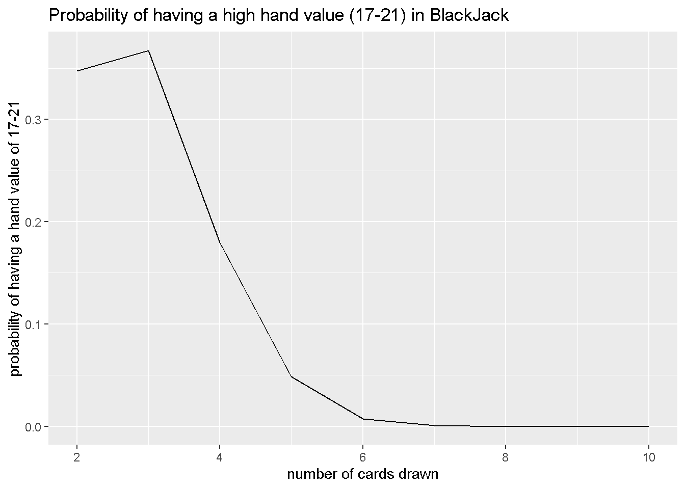
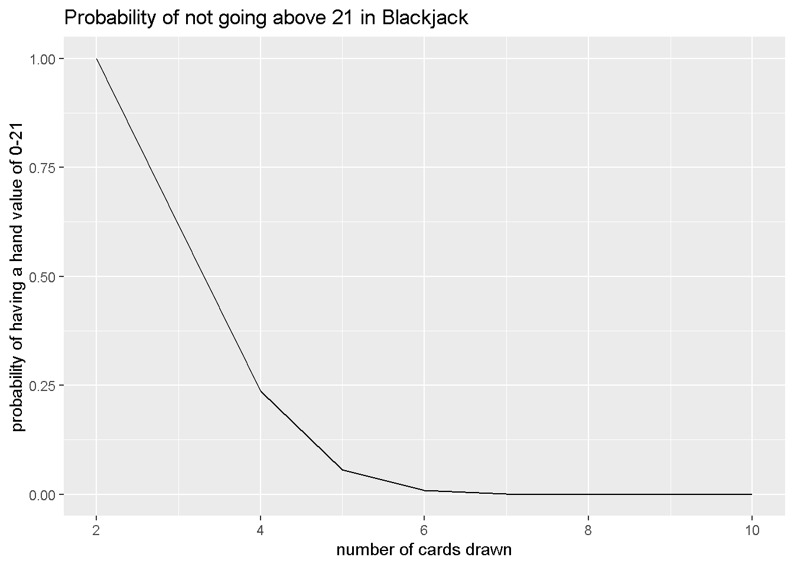

library(tidyverse)
newdeck <- function() {
deck <- c(rep(2:10, each = 4), rep(10, 4*3), rep(11, 4))
return(deck)
}A Simulation study: Chance of Winning Blackjack
Using simulations, I will conduct multiple runs of the probability of getting a good hand in blackjack in comparison to how many cards are pulled.
Description of Project
Even though I just turned 20 this October, I believe a lot of people are complexed by casino games and its probabilities when it comes to winning. How likely are you to win at a game of poker, a game of roulette, or even a game of blackjack? Are any of these games skill based or in “your” favor? What game should I go and play if I want to earn money fast? Now I am not going to go gamble any time soon, not only because I am underage but also know better then to fall in that rabbit hole, but I really want to learn more about probabilities when it comes to playing such games and putting one’s money the line. I have heard a lot about the game blackjack and would want to test the probability of getting a value higher than or equal to 17 when drawing two cards because apparently you don’t want to hit if you are higher than 17. I am going to get this probability by running 10,000 simulations of 1)creating a deck with all amounts of cards, 2) have a variable have randomly chosen two values from such deck and 3) getting a logical value if the sum is between 17 and 21 (true) or not (false). I will also vary the amount of cards someone draws to see a range of probabilities
Code
1st step: Creates a deck containing 4 values of 2-10, 4 values of 10, and 4 values of 11. Problem: Can’t tell which are diamonds, spades, clovers, or hearts however in this instance we only care about the value so this works. The deck is also irreplacable when you take a card out.
deck <- newdeck()
deck [1] 2 2 2 2 3 3 3 3 4 4 4 4 5 5 5 5 6 6 6 6 7 7 7 7 8
[26] 8 8 8 9 9 9 9 10 10 10 10 10 10 10 10 10 10 10 10 10 10 10 10 11 11
[51] 11 11- Add values we drew, also has a while loop that changes aces from 11 to 1 if we are above 21.
calculate_value <- function(n) {
total <- sum(n)
num_aces <- sum(n == 11)
while(total > 21 && num_aces >0){
total <- total - 10
num_aces <- num_aces -1
}
return(total)
}- Runs one simulation of drawing two cards from the deck and returns true or false if it is a high value (17-21)
between17and21 <- function(num_cards) {
deck <- newdeck()
hand <- sample(deck, num_cards, replace = FALSE)
hand_value <- calculate_value(hand)
return(hand_value >= 17 && hand_value <= 21)
}4.Run simulation multiple times and right now we are only testing 2 cards drawn.
draw_cards <- function(nums,reps){
probability <- map_lgl(1:reps, ~between17and21(nums)) |> mean()
return(data.frame(high_hand_prob = probability, amount_of_cards = nums))
}set.seed(47)
draw_cards(2,10000) high_hand_prob amount_of_cards
1 0.3474 2Visualizations
Iterate it from drawing 2 to 10 cards and Visualization: This graph represents a line graph of probabilities of a hand value being between 17-21 based on the amount of cards we draw. It has a downward trend which makes sense however we can see that at 2-3 cards we have a probability around 30% which is pretty high considering that we want to be in such a high range when playing this game. The cut off is around 6 cards where it is almost impossible to be at such a value.
set.seed(47)
map(2:10, ~draw_cards(.x, reps = 10000)) |>
list_rbind()|>
ggplot(aes(x= amount_of_cards, y = high_hand_prob)) +
geom_line() +
labs(title = "Probability of having a high hand value (17-21) in BlackJack" ,y = "probability of having a hand value of 17-21", x = "number of cards drawn")
Mid-way I also wanted to calculate the chances of staying below 21 while drawing cards using similar functions with some altercations:
between0and21 <- function(num_cards) {
deck <- newdeck()
hand <- sample(deck, num_cards, replace = FALSE)
hand_value <- calculate_value(hand)
return(hand_value >= 0 && hand_value <= 21)
}draw_cards_alt <- function(nums,reps){
probability <- map_lgl(1:reps, ~between0and21(nums)) |> mean()
return(data.frame(high_hand_prob = probability, amount_of_cards = nums))
}In this graph we see a representation of probabilities of staying under or at 21 when drawing cards. Similarly, we see another downward trend and a cut off at 6 cards since again it is impossible to be within 21 at such amount of cards. The line has a very straight slope and suggests that probability gets worse the more cards we get which makes sense as the deck of cards has more high value cards than lower values.
set.seed(47)
map(2:10, ~draw_cards_alt(.x, reps = 10000)) |>
list_rbind()|>
ggplot(aes(x= amount_of_cards, y = high_hand_prob)) +
geom_line() +
labs(title = "Probability of not going above 21 in Blackjack" ,y = "probability of having a hand value of 0-21", x = "number of cards drawn")
Conclusion
Overall my main goal was to calculate the chances of a player getting a good hand at the start of a blackjack game and wanted to continue seeing the probability of staying in that range throughout the game. I did this by having a simulation done 10000 times for if a player draws 2 cards all the way to 10 cards and see the probabilities between these choices. Throughout the code I explain what each one does. We can see such probabilities in the first plot and can conclude we have a high chance of getting a good hand in the first two cards and from there the probability gets worse as you play the game. This isn’t necessarily saying you have only a 30 percent chance to have a good hand in the game but it suggests that you can anticipate to win based on the lower amount of cards you have. This is also connected to the second graph calculating probabilities of staying under 21 based on the amount of cards you have. Both graphs have a similar trend and suggest the conclusion that you want to stay within a 3-4 card range when playing the game. To conclude, when playing blackjack you have the highest chance of winning (having a good hand) when starting the game and the more you hit (draw a card) the less chance you have at winning. Blackjack is a very probabilistic game as in this simulation I don’t take into account the decision of hitting or staying based on the dealers hand, since if the dealer has a bad hand, aka a hand that most likely will break 21, you don’t want to worsen your chances since you want to rely on them breaking first. I would love to continue running a simulation like this however it seems very complex and could get confusing but I am happy I got these results in the end.